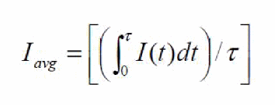
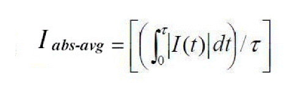
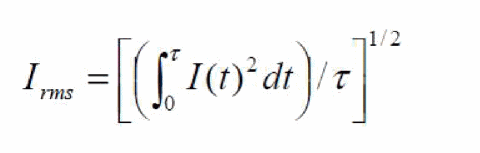
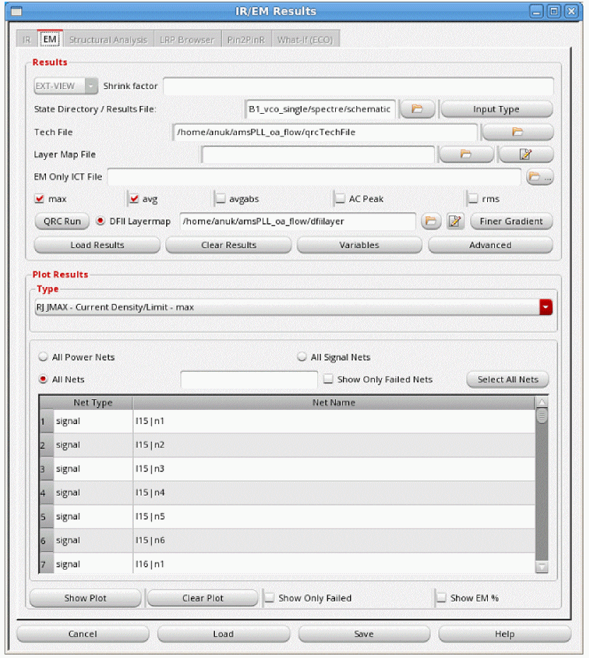
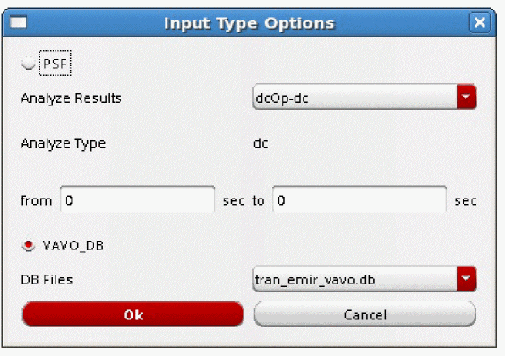
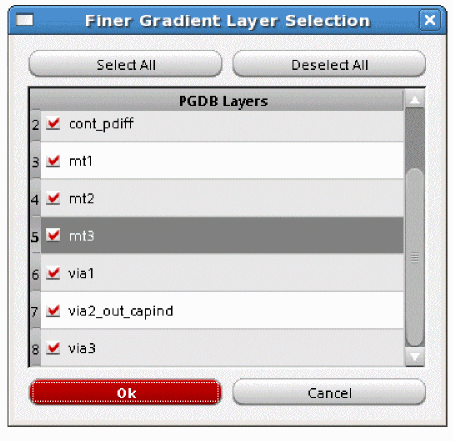
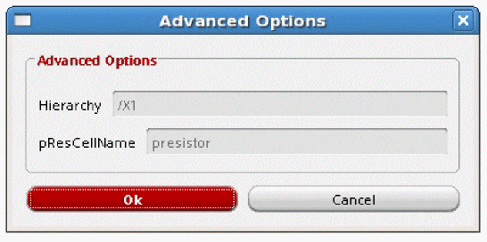
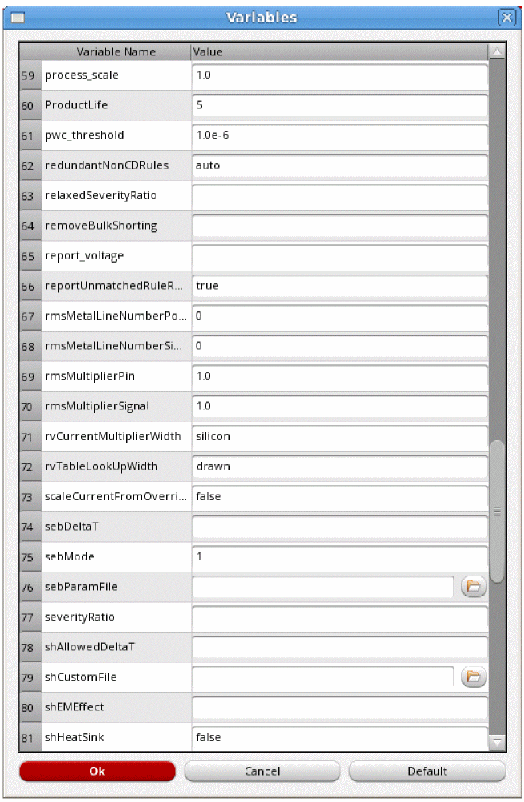
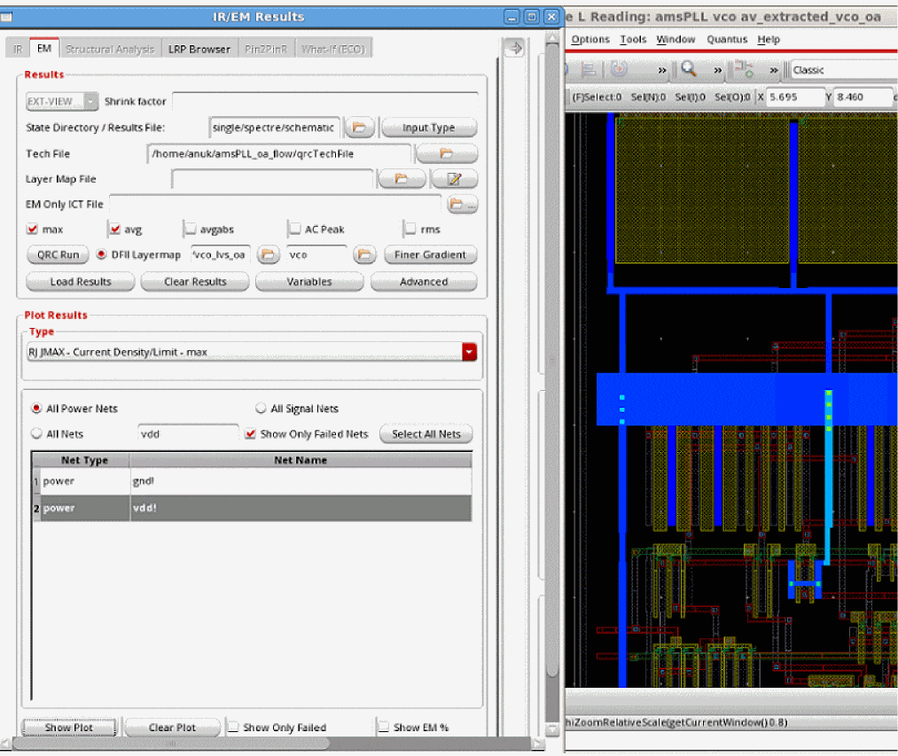

7
EM Analysis Results
- Overview
- EM Rules Specification
- Types of EM Analysis
- Design Resistor EM Current Analysis
- The EM Analysis Flow
- Displaying Current Directions for EM Plots
- Reporting the Direction of Currents in the EM Result File
- Types of EM Analysis Plots
- Converting emDataFile to ICT File for EM Analysis
- Generating EM Analysis Reports in Voltus-Fi-L
Overview
Voltus-Fi-L uses the results of the simulation performed using the vavo-db or the PSF data to perform EM analysis and displays the results of the analysis on the Virtuoso layout.
It also generates text and html reports of the analyses and lets you query the analyses results to view specific violations on the layout. This is used to debug the high EM violation regions in the design.
Batch mode support is provided for loading EM analysis results and generating reports. For details of the batch commands used to load and print EM analysis result reports, see Batch Commands for EM Reports in the “Batch Mode Execution” chapter.
EM Rules Specification
Before running EM Analysis, the EM reliability rules need to be specified. These rules are read either from the QRC technology file (qrcTechFile), or from the emDataFile, which includes user-specified rules.
For more information, see the “EM Rules Specification” chapter.
Types of EM Analysis
This section details the types of analyses that are available in Voltus-Fi-L.
-
Peak (max)—Calculates the Current Density violations based on the maximum DC current for metal lines, vias, and contacts.
Ipeak=Ipeak_dc=maximum value ofI -
Average (avg)—Calculates the Current Density violations based on the average value of the DC current for metal lines, vias, and contacts.
where “T” is time and “I(t)” is value of current. -
AC-Peak (AC Peak)—Calculates the Current Density violations based on the peak AC current for metal lines, vias, and contacts. It is applied to periodic AC or pulsed DC signals.
Ipeak_ac=Ipeak
Ipeak_ac(limit)=Ipeak_dc(limit)/(r)1/2
where the Ipeak_dc(limit)is specified in the ICT file
and duty ratio “r” is:
r=Iabs-avg/Ipeak, by default (“false”)
And
r=Td/Ttotal, when the dynamicACPeak variable is set as eithertrueormultiplePeak.
Ttotal=total transient time
Td=the time duration in micro second or the total “On Time” period, whereabs(I)>(max(abs(I)/2.0)during transient analysisVoltus-Fi-L does not exactly calculateWhen the parameter halfPeakAnalysis is set toTdas themax(abs(I)/ 2.0)period. Instead, it calculatesTdby measuring the pulse at half energy level. This is because of performance reasons. The parameter pwc_threshold defines the current threshold for finding the start of the pulse. Thepwc_thresholdvalue is specified using theemirutilcommand in the EMIR configuration file. The default value is1e-06(1uA)true, Voltus-Fi-L exactly calculates theTdas themax(abs(I)/2.0)period.
Tdhas the following different values depending upon the value ofdynamicACPeak:-
Td=the time duration of maximum peak, whendynamicACPeakis set totrue -
Td=sum of time durations of different peaks,Td1+Td2+TdN....dynamicACPeakis set tomultiplePeak)The software replaces the value of “r” with the value of applyRThreshold if the value of “r” is < than that ofapplyRThreshold. This is because a small “r” value results in an unreasonable increase in the Ipeak_aclimit. To avoid this scenario, use theapplyRkeyword to reset the value of “r” in the ICT file or change the value of theapplyRThresholdvariable, either in the Variables form or in the batch mode.
-
-
Avg-Abs (avgabs)—Calculates the Current Density violations based on the average of the absolute current for metal lines, vias, and contacts.
where “T” is time and “I(t)” is value of current. -
RMS (rms)—Calculates the Current Density violations based on the root mean square (RMS) of the AC current for metal lines, vias, and contacts.
where “T” is time and “I(t)” is value of current.
Design Resistor EM Current Analysis
By default, the EM current analysis is only performed on parasitic resistors. If required, EM analysis for design resistors can be enabled by specifying design resistor cell names by using commands listed below in a file.
net design_res_models=[name=nplusres l=l w=w layer=rhim_n unit=1e06]
net design_res_models=[name=pplusres l=l w=w layer=rhim_p unit=1e06]
l is the length property name of the cell
w is the width property name of the cell
layer is the technology layer to be used for EM analysis.
unit is the factor to convert l/w in um
This file is then specified in the Voltus-Fi-L command file using the variable listed below, before running the load_em_results_extview or the load_ir_results_extview commands.
set_variable extViewExtraCmdFile<filename>
The design resistor related EM results are reported in the EM analysis report file.
For more details, see
The EM Analysis Flow
In this section, the use model for the EM analysis flow is detailed below for the batch mode and GUI mode.
The EM Analysis Batch Mode Flow
The EM analysis batch mode flow can be run using either the EMIR configuration file used in Voltus-Fi-XL or the command file used by VPS-L. The complete details of the batch mode flow are covered in the “Batch Mode Execution” chapter.
For details of the Voltus-Fi-L batch mode flow, see the following sections in the “Batch Mode Execution” chapter:
For details about migrating from VPS-L to Voltus-Fi-L in batch mode, see Migrating from VPS-L to Voltus-Fi-L in Batch Mode in the “Batch Mode Execution” chapter.
The batch mode EM analysis flow involves the following key tasks, which are detailed in the sections below:
Loading the EM Analysis Results
When the VPS-L command file is used for running Voltus-Fi-L in the batch mode, you can load the EM analysis results by writing the following command in the vfibatch command file:
load_em_results_extview -icmd_file
cmd_file is the batch file used in VPS-L batch mode execution.
Printing the EM Analysis Reports
When the EMIR configuration file is used for running Voltus-Fi-L in the batch mode, the EM analysis report, #.rpt_em, is generated automatically by the tool.
When the VPS-L batch command file is used for running Voltus-Fi in the batch mode, the command, print_em_report is used to generate the EM analysis reports. This is the same command that is used to print EM analysis reports in Voltus-Fi-XL.The syntax of the command is as follows:
print_em_report
-net {all_power | all_signal | all_nets | netname}
-type {javg | jmax | jabsavg | jacpeak | jacrms | rc | rcavg | rcrms}
[-threshold threshold_value]
-filename output_file_name
[-rule custom_em_rule_name]
-type parameter, only the analysis types listed in the syntax above are supported in the Voltus-Fi-L flow.A Sample Command File for EM Analysis
Sample command files used for running the EM analysis in batch mode in Voltus-Fi-L are provided below.
-
A sample batch command file, same as the VPS-L command file, used for EM analysis is provided below.
;vsa batch mode command file
_vsa_extracted_lib_cell_view “amsPLL” “vco” “av_extracted_sol”
_vsa_testbench_lib_cell_view “amsPLL” “TB1_vco_single” “schematic”
_vsa_simulation_directory “/custom/TB1_vco_single/spectre/schematic/”
_vsa_pres_cellname “presistor”
_vsa_analysis_data “TRANSIENT”
;following command are for EM analysis
_vsa_qrc_run_directory “/custom/WORK/AV/LVS_emir”
_vsa_em_data_file “emDataFile.txt”
;_vsa_analyze_em "0" "1n"
_vsa_analyze_em
exit
-
A sample batch command file, same as the EMIR configuration file, used for EM analysis is provided below.
For Transient Analysis
===========
net name=[*] analysis=[iavg irms imax vavg vmax]
emirutil view=[lib=amsPLL cell=vco view=av_extracted_vco_oa]
emirutil view_tb=[lib=amsPLL cell=TB1_vco_single view=schematic]
emirutil analysisType="tran"
emirutil analysisName="tran-tran"
emirutil presCellName="presistor"
emirutil qrc_output=[runDir=vco_lvs_oa runName=vco]
emirutil analysisStartTime="0"
emirutil analysisStopTime="170n"
emirutil hierarchy="/X1"
emirutil techfile="qrcTechFile"
The EM Analysis GUI Flow
To view the EM analysis results in Voltus-Fi-L, ensure the following are provided:
-
The
emirmode is enabled while performing simulation - The name of the simulation result directory
- The DFII layermap file for mapping the extracted view names and the DFII layer names
- The location of the qrcTechFile/ICT file or emDataFile
- The Quantus QRC run directory
- The Quantus QRC run name
- The layermap file for mapping layer names in the simulation database to the layer names in the technology file
- The hierarchy name
- The presistor cell name
The following topics are covered in this section:
Viewing the EM Analysis Results
-
Choose IR/EM Analysis – Rail Analysis Results. The IR/EM Results form opens. Click the EM tab to plot the EM analysis results. This form is shown below.
Figure 7-1 IR/EM Results Form – The EM Tab
- The EXT_VIEW option is selected to enable the extracted view support.
- Specify the State Directory/Results file, which is the path to the Spectre Simulation directory that stores the results of the simulation.
- Specify the Shrink factor, if any, by which the extracted view was shrunk. This is used for flows where the extracted view is generated with a shrunk technology but the layout remains on the original technology. For example, if the original extracted view was shrunk by 80%, the shrink factor should be specified as 0.8. The shrink factor value is less than 1.
-
Specify the Input Type Options to specify the type of data, PSF or VAVO_DB, to be used for the EM analysis. When you click this button, the Input Type Options pop-up window opens. This is shown below.
Figure 7-2 Input Type OptionsIn the above form, provide the following inputs:-
Select either PSF or VAVO_DB depending upon the input data being used for the analysis. If your simulation data is in the
vavo.dbformat, the VAVO_DB option is selected by default. You can also specify this option in the batch mode by using the _vsa_vavo_db_file command. -
For the PSF data, specify the analysis type in the Analyze Results cyclic field. You can specify either DC operating point (DCOP) analysis or transient (
tran) analysis.- The DCOP analysis is recommended for large analog designs that are difficult to simulate in Spectre using transient analysis, especially when all parasitics are included.
-
The transient analysis option sets the simulation time in seconds automatically when the from/to fields are selected. For transient analysis, separate start and stop times can be specified using the from and to fields. You can also specify the start and stop time in the batch mode by using the _vsa_analyze_em command in the command file for EM analysis, respectively. If you are using the
emir conffile, specify theemirutilcommand options,analysisStartTimeandanalysisStopTime. If the start and stop times are not specified, the full duration of the simulation is the default.For details of theemirutilcommands supported in Voltus-Fi-L, see the EMIR Control File Options Supported in Voltus-Fi-L in the “Batch Mode Execution” chapter.
- When the analysis type is specified, the type of analysis is displayed in the Analyze Type field.
-
For the VAVO_DB data, select the DB Files from the list. This is the
vavo_dbfile to be used for the analysis. - Click OK.
-
Select either PSF or VAVO_DB depending upon the input data being used for the analysis. If your simulation data is in the
-
Specify the technology file in the Tech File field. The following technology files are supported in this flow:
-
The interconnect technology (
ICT) file -
The QRC technology file (
qrcTechFile) -
The
emDataFile, which is converted into the ICT file. For details, see Converting emDataFile to ICT File for EM Analysis.
-
The interconnect technology (
- Specify the Layer Map File. This file is used to map the layer names in the simulation database to the layer names in the technology file specified in the Tech File field. This is optional and is only required if the layer names in the simulation database are different from the ones in the technology file. You can also create a new layer map file or edit an existing file, using the Edit button provided next to the field. For more information about the layer map file, see the Layer Map File in the “File Formats” chapter.
-
Specify the EM Only ICT File, which includes information about the process and EM models to be used for EM analysis. This is an optional file that can be provided with the
qrcTechFileflow. When provided, theprocessandem_modelinformation will be picked up from the specifiedEMOnlyICTFile. -
Specify the DFII Layermap. This layermap file is the extracted view-to-DFII layermap file. When this file is specified, the plots displayed on the extracted view show solid shape highlighting. For details, see Solid Shape Highlighting. For a sample file, see DFII Layer Map File in the “File Formats” chapter.
The following considerations apply to the DFII layermap flow:- When the DFII layermap file is specified, the visibility of the DFII layers on the layout is synchronized with the layers selected in the Layers group box or the layer selection window of the Display form.
- When the correct mapping in the DFII layermap file is either not specified or if some layers are missing in this file, then the resistors or nodes of those layers will not be highlighted on the layout because there will be no shapes attached to them.
-
When this file is not specified, the pop-up-window shown below opens. If you click Yes, the plots are displayed using stick diagrams.
-
For the DFII layermap flow, click Finer Gradient to view the finer gradient for the selected layers. When you click this button, the Finer Gradient Layer Selection pop-up window opens. This is shown in figure below.
Figure 7-4 Selecting Layers for Viewing Finer GradientIn this window, all the layers are selected by default. Click Deselect All and select the PGDB layers for which you want to view the finer gradient and click OK. For details, see Displaying Finer Color Gradient for Selected Layers in IR and EM Plots in the “IR Drop Analysis Results” chapter of the Voltus-Fi Custom Power Integrity Solution XL User Guide. -
Select Advanced. The Advanced Options form opens.
Figure 7-5 Advanced OptionsIn this form, specify the following: -
Click Variables to open the Variables form. In this form, you can view and/or edit the variables that are used for EM analysis. Double-click the value of any variable to edit it. For variables that require a path to a file or a directory to be specified, click the Browse button next to the variable field and specify the path. This is shown in the figure below.
Figure 7-6 The Variables FormYou can also set the above variables in the batch mode by using theset_variablecommand.For descriptions of all the variables supported in Voltus-Fi-L, see the “Variables” chapter. -
Specify the Type of EM analysis for which you want to plot results. The available options are max, avg, avgabs, AC Peak, and rms. You can select more than one analysis type at a time. By default, max and avg are selected.
- max: calculates the Current Density violations based on the maximum DC current
- avg: calculates the Current Density violations based on the average value of the DC current
- avgabs: calculates the Current Density violations based on the average value of absolute current
-
AC Peak: calculates the Current Density violations based on peak AC current
- rms: calculates the Current Density violations based on the root mean square (RMS) value of the AC current
For details of the above analysis types, see Types of EM Analysis. -
Click Load Results to load the results of EM Analysis. After the results are loaded, the list in the Plot Results group box is enabled. The list of plots corresponds to the selected analyses types. In addition to the plots specific to the chosen analysis type, RC plot type is available for all EM analyses.
For details of the RC plots, see RC, RCAVG, and RCRMS – Resistor Current Plots, in the “IR Drop Analysis Results” chapter of the Voltus-Fi Custom Power Integrity Solution XL User Guide.Once the results are loaded, the plot types are enabled. You can select from the available plot types. For more information about the different EM plots, see Types of EM Analysis Plots in the “EM Analysis Results” chapter of the Voltus™-Fi Custom Power Integrity Solution XL User Guide. - Click Clear Results to clear the results.
- Click All Power Nets to view EM plots for all the power nets.
- Click All Signal Nets to view EM plots for all the signal nets.
-
Click Select Nets to specify the nets for which you want to view EM plots. You can select one or more nets from the list of nets provided in the list box. The list box lists Net Type and the corresponding Net Name.
You can search for specific nets for which you want to plot results by typing the net name in the text field provided in the form. The list box is updated to display information about the specified net. - Click Show Only Failed to plot results only for those nets that failed the EM check. Selecting this option will set the minimum value for the slider to 1.
- Click Show EM% to display the EM violations as percentages. The Min - Max slider range displays the EM violations as a percentage of Current Density and Current Density limit (J/Jlimit) values. A percentage of 100 and above indicates EM violations.
-
Click Show Plot to view the plot on the layout. When you click Show Plot, the IR/EM Results form expands to show the available plot display options. In this form, you can customize the EM analysis plot displays. You can use these options to customize the displayed plots.
For details, see Displaying and Querying EMIR Results in the “IR Drop Analysis Plots” chapter. -
Click Clear Plot to clear the plot for the selected net from the Virtuoso layout. For this, select the net for which you want to clear the plot in the list box and then click Clear Plot.
Figure 7-7 Current Density Plot in Voltus-Fi-L
Displaying and Querying EMIR Results
Voltus-Fi-L lets you specify the plot display settings for the IR drop and EM plots that are displayed on the Virtuoso layout.
In addition, there are options to query the layout for viewing specific violations. The results of the query are highlighted in the EM/IR tab of the Annotation Browser.
For detailed descriptions of the display options and the query feature, see
Displaying Current Directions for EM Plots
When you load EM results and click Show Plot, the expanded IR/EM Results form opens. In this form, there are options provided for displaying the current direction between nodes, and for customizing the size of the arrows showing the direction of the flow of current.
Figure 7-8 Viewing the Current Direction
The following options are provided in the Display group box:
- Current Direction: Check this option to enable the display of current directions on the layout for any EM plot type.
- Display Size: Specify the size of the symbols that are used for displaying the current directions. You can increase or decrease the size of the symbols based on your requirements. The acceptable range is between 0 and 5. If you specify a value greater than 5, the software will set the display size to the maximum possible size, which is 5.
When the Current Direction option is enabled, the plot on the layout shows white highlights for the current direction flow of selected nets. The highlight appears on top of the plot highlights. The current direction plot honors the following user settings:
- Layer selection specified in the Layers group box
- The Select Nets option in the Type group box of the IR/EM Results form, and
- Show Only Failed check in the IR/EM Results form
- For metal layers, arrows are used to indicate the flow of current in the directions; “E”, “W”, “N”, “S”, “NE”, and so on. For example, if the direction of current is from West to East, the arrow will be horizontal and will point from left-to-right while if the direction of current is South to North, the arrow will be vertical and will point from bottom-to-top.
- For vias, the direction of the current is from layer -> to layer. A cross symbol (X) is used to show currents flowing down, while a diamond-shaped dot shows currents flowing up.
This is shown in the image below.
Figure 7-9 Current Flow Direction Representation on the Layout
Reporting the Direction of Currents in the EM Result File
You can print information about the direction of current flow for each layer in the EM result file. This current direction is reported in the “Current Direction” column in the report.
You can specify the reporting of current direction in the batch mode in either of the following ways:
-
Specify the following in the
vfibatchcommand file:set_variable idirn true -
Specify the following in the EMIR control file:
emirutil idirn=true
For details, see
Converting emDataFile to ICT File for EM Analysis
Voltus-Fi supports the specification of an emDataFile as a technology file for performing EM analysis. The file can be specified in the following ways:
-
In the batch mode by using the variable,
_vsa_em_tech_file -
In the GUI mode, by specifying the path to the
emDataFilein the Tech File field.
When the emDataFile is specified, the following files are generated in the current working directory:
-
toolgenerated.ict, or the converted ICT file -
additional.cmdfile -
emdatafiletoict.log, which is generated only in batch mode
The software uses the toolgenerated.ict for EM rules and the additional.cmd file for EM variable values for running EM analysis.
Types of EM Analysis Plots
The different plot types available and the corresponding analysis types are listed below:
- RC plots – max, avg, avgabs, AC Peak, rms analyses
-
RCAVG, RCRMS plots – max, avg, avgabs, AC Peak, rms analyses (only available in the
qrcTechFileflow) - RJ JMAX and J_MAX plots – max analysis
- JAVG and J_AVG plots – avg analysis
- JABSAVG and J_ABSAVG plots – avgabs analysis
-
JACRMS and J_ACRMS plots – rms analysisJACPEAK and J_ACPEAK plot types are only available in the
qrcTechFileflow. In addition to the above, the RC plots are common to all analysis types. However, the RCAVG, and RCRMS plots are only available in theqrcTechFileflow and the EM Only ICT File flow. They are not supported in theemDataFileflow.
For details of the above plots, see
Generating EM Analysis Reports in Voltus-Fi-L
For details about the EMIR reports generated in Voltus-Fi-L, see the following sections in the “IR Drop Analysis” chapter of the Voltus-Fi Custom Power Integrity Solution XL User Guide:
- Reports Generated using the EMIR Control File
-
Default Reports Generated for EMIR AnalysisFor details of the supported EMIR control file options that can be specified, see the EMIR Control File Options Supported in Voltus-Fi-L in the “Batch Mode Execution” chapter.
For details on how to specify variables using theemirutilcommand in the EMIR control file, see Using the emirutil Command in the EMIR Control File in the “Variables” chapter.
Return to top